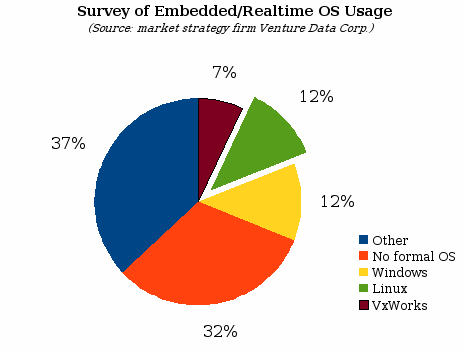

Fierce soldier of cuteness on kittenwar.com.
There are enormous markets for free software below the PC for which Microsoft has not built a dominant ecosystem, nor one with strong ties to the desktop. These markets should be much easier for free software developers to infiltrate and dominate:

The fragmented state of embedded operating systems. This survey
also showed that planned use of Linux is expected to increase 280% for the “next wave of projects.” However, that would still only give it 33% of the market.
The proprietary OS Symbian has 70% of the high-end cellphone market but is not free software, and technically inferior to Linux, and therefore should be easy to replace. The good news is that ABI Research forecasts that by 2012, more than 127 million devices will be enabled with Linux, up from 8.1 million in 2007. Many of the proprietary embedded OSes enjoy their success primarily because of inertia.
Moore's law doesn't just apply to our computers, it will also ensure that small new devices will proliferate like mice in springtime. And those mice will need software to make them interesting. One device I'm looking for is a robotic mouse for my cat:
Fierce soldier of cuteness on kittenwar.com.
He's regal and mellow and while he happily enjoys lots of quality time on da cowsche and refrigerator, his hunting instincts are prolific.1 I've purchased many toys for him to discover how he learns and plays, but while each one has provided a few minutes to a few hours of entertainment, none of the toys provides him the thrill and challenge of stalking and catching live prey.
One of Davis's favorite toys is a ping-pong ball. However, while it bounces around and can quickly disappear, it isn't alive and doesn't change direction under its own power. I can watch him calculate a path to pounce on a toy, realize it isn't a challenge for his prowess, sneer, and lose interest.
I'd like a robotic mouse that is quiet, agile and fast. Maybe when he catches it, the mouse could open a hatch and release some food. It would be nice to come home from work and be able to sit on the couch and commiserate with my cat about how exhausted we both are from earning our meal.
Better toys are in our future, and so are safer ones. My sister has a beautiful Husky, an interesting animal because, like my sister, it has no sense of awareness of its location. Huskies are bred for endurance and strength and can head in any given direction for great distances but are never able to retrace their steps. I'd like to be able to give him a collar with GPS and a cellphone-like transmitter that could report back on his location. Anyone who has lost a pet understands the frustration. A similar thing could also be used for young children. A GPS-device would allow you to sleep soundly at night knowing you can always find your vulnerable family members.
These are just two of the many innovative devices I can imagine, and these devices require little new hardware technology beyond what we already have at our fingertips. Building such devices would cost hundreds of dollars today, but the relentless march of Moore's law suggests that the price will keep halving every 18 months; this combined with free software will make the future very interesting!